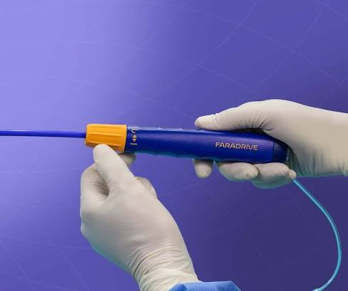
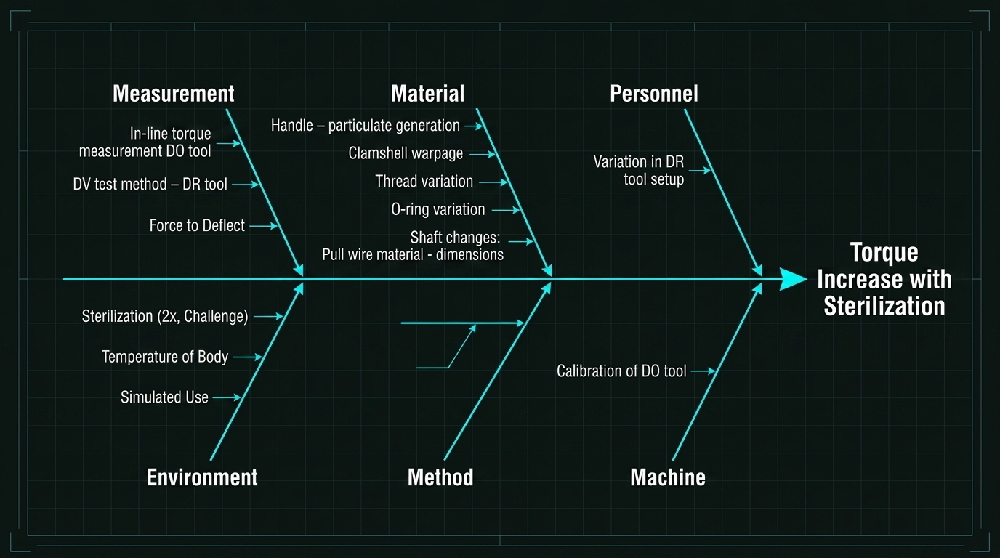
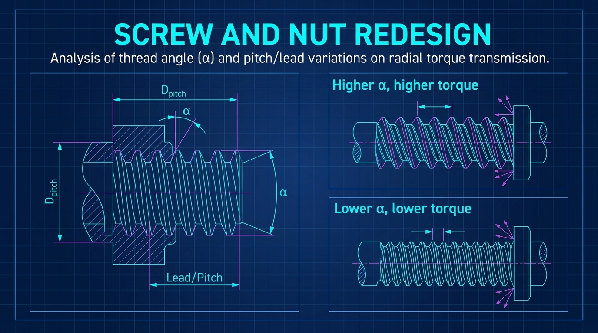
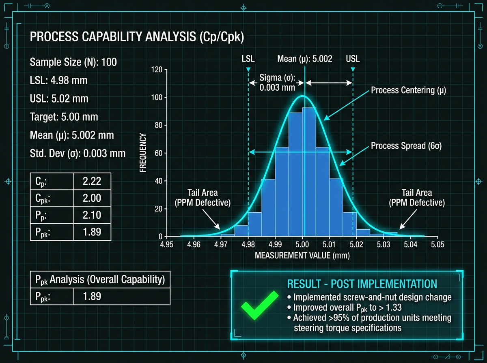
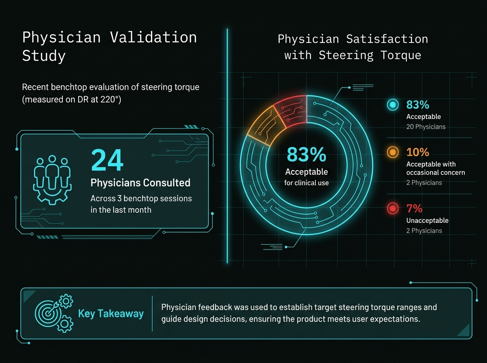

Mission
Root-cause investigation into elevated steering torque in a steerable sheath system. Developed and executed structured testing to isolate shaft, handle, sterilization, and component-level contributors to torque variability.
Problem
Designed a structured RCA workflow and evaluated contributing factors including warm water conditioning, screw-and-nut assembly design, clamshell interaction, O-ring lot variability, sterilization, dwell time, shaft liner properties, braid density, and simulated use.
Approach
Used DOE-style testing, randomized O-ring comparisons, pre/post sterilization evaluation, handle-only and full-sheath testing, and torque measurement at defined angular positions. Tested multiple sample groups and compared component-level behavior to full-assembly performance.
Key Findings
Torque variability was most strongly linked to shaft interaction effects, screw-and-nut geometry, O-ring behavior, and sterilization sensitivity. The RCA also separated component-level contributors from full-assembly effects so design changes could be prioritized.
Outcome
Identified the strongest contributors as shaft interaction, screw-and-nut design, and O-ring variability. A screw-and-nut design change reduced torque contribution and improved expected design validation performance. VOC testing was also used to understand physician perception of acceptable torque ranges.
Project Impact
The work created a clearer technical basis for torque-related design decisions, connected bench measurements to physician feedback, and helped focus validation strategy on the contributors most likely to affect user experience and product robustness.

RCA Fishbone Diagram
High-level mapping of potential contributors across measurement, material, personnel, environment, method, and machine vectors.

Screw and Nut Redesign
Analysis of thread angle and pitch/lead variations on radial torque transmission.

Outcome and Capability
Process capability review showing improved torque performance and supporting evidence for the design change direction.

Physician VOC Ranges
Physician feedback helped translate torque test outcomes into practical user perception thresholds.
